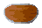
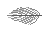

RSC round shield reference

RSC feather reference

Shield of Mobility candidate
 Native PNG
Native PNGAll icons use native 48 × 32 canvases. Top: native size at browser zoom 100%. Bottom: equal 8× pixel zoom. Brown and straw feather tips follow the approved cockatrice's wing coloring; the olive-tan/brown center is tightly layered.


Native PNGBuilt-in imagegen prompt: round feather shield with a muddled densely layered center, distinct pale feather tips projecting at its edge, cockatrice wing palette and authentic RSC shading. Full prompt. Exported with nearest-neighbour fitting and hard alpha. No in-game assets changed.